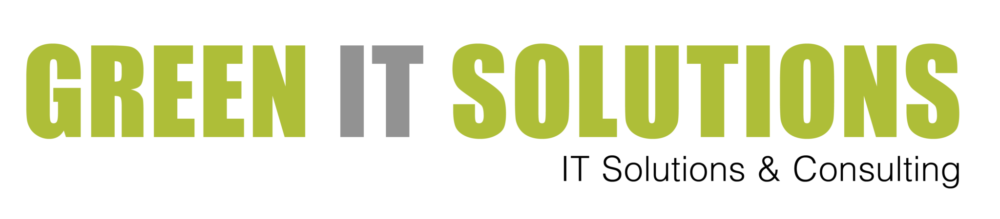
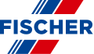
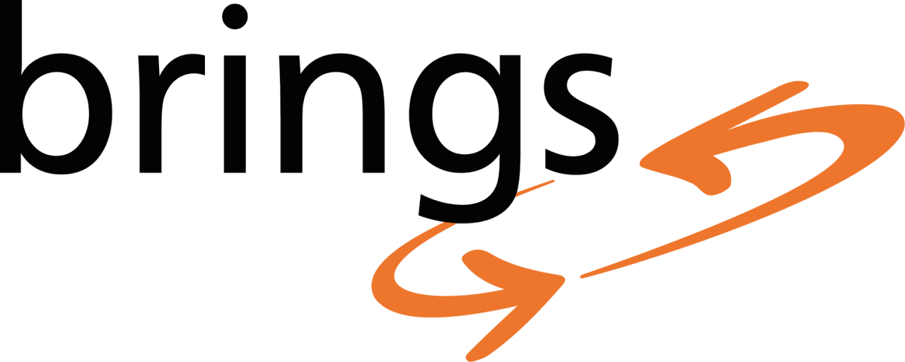
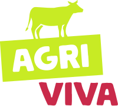

Hier Habe ich Gearbeitet
Eine Übersicht über meine Ausbildungen und Jobs, bei denen ich meine kreativen und technischen Fähigkeiten erfolgreich einbringen konnte.
Bereit für neue Herausforderungen (Open to Work)
VERFüGBAR AB: SOFORT
Mediamatik
Visuelle Kommunikation
IT-Support & Technik
Web- & Grafikdesign
Eventplanung
Nach dem erfolgreichen Abschluss meiner zweiten Ausbildungen als Mediamatiker im Jahr 2025 und wertvollen Erfahrungen im Medienbereich bin ich aktuell auf der Suche nach einer neuen beruflichen Aufgabe. Ich bringe eine vielseitige Mischung aus technischer Sicht, klarer Kommunikation und kreativer Mediengestaltungmit. Egal ob in welchem Bereich der Mediamatik, Event-Planung oder in einem anderen spannenden Schnittstellen-Beruf: Ich freue mich über jede Kontaktaufnahme und ein persönliches Kennenlernen.

Technik- & Kommunikation Koordinator
GREEN IT SOLUTIONS (IV-ARBEITSVERSUCH)
IT-Support
Kommunikation
Ablauforganisation
Teamarbeit
Problemlösung
Während meines IV-Arbeitsversuchs bei Green IT Solutions konnte ich meine Fähigkeiten an der Schnittstelle zwischen Technik und Kommunikation erfolgreich einsetzen. Ich war dafür zuständig, technische Abläufe zu begleiten und die Absprachen innerhalb des Teams sowie mit Partnern zu unterstützen. Diese Zeit bot mir eine wertvolle Gelegenheit, mich in einem modernen IT-Umfeld zu beweisen, praktische Erfahrungen zu sammeln und mich neuen Herausforderungen zu stellen.
Durch die tägliche Arbeit an verschiedenen Projekten konnte ich mein technisches Verständnis vertiefen und lernen, wie wichtig eine klare und verständliche Sprache im Support ist. Der Arbeitsversuch war für mich ein wichtiger und erfolgreicher Schritt für meine berufliche Weiterentwicklung.

Mediamatiker EFZ
FISCHER AG PRÄZISIONSSPINDELN
Digitale Medien & Webdesign
Grafikdesign & CI
Fotoproduktion
Event- & Messemanagement
Projektmanagement
Meine Zeit bei FISCHER im Rahmen meiner Ausbildung als Mediamatiker war eine unglaublich dynamische und lehrreiche Reise. Vom ersten Tag an war ich in vielfältige Projekte involviert, die weit über das übliche Mass einer Ausbildung hinausgingen. Es war faszinierend, die digitale Visitenkarte des Unternehmens massgeblich mitzugestalten. So trug ich einen wesentlichen Teil zur Gestaltung der Webseiten von FISCHER Spindle Group AG und FISCHER Fuel Cell Compressor bei. Diese Projekte waren für mich eine spannende Herausforderung, bei der ich meine kreativen und technischen Fähigkeiten voll einsetzen konnte, um eine moderne und benutzerfreundliche Online-Präsenz zu schaffen.
Doch nicht nur im digitalen Raum konnte ich meine Spuren hinterlassen. Die Überarbeitung des Corporate Designs war ein weiterer Meilenstein, bei dem ich tief in die Markenidentität von FISCHER eintauchen durfte. Dieses Fundament zog sich durch zahlreiche weitere Projekte, von der Gestaltung ansprechender Social-Media-Posts und professioneller Visitenkarten über informative Broschüren und einheitliche E-Mail-Signaturen bis hin zur Produktion kurzer, prägnanter Videos. Ein besonderes Highlight war die Konzeption und Umsetzung des Imagevideos, das die Innovationskraft und die Werte von FISCHER auf bewegende Weise transportiert.
Auch die Welt der physischen Präsenz wurde durch meine Arbeit bereichert. Ich war massgeblich an der Gestaltung vieler Messestände beteiligt, die das Unternehmen auf nationaler und internationaler Ebene repräsentierten. Dabei ging es nicht nur um das visuelle Erscheinungsbild, sondern auch um die aktive Mitwirkung bei der Planung und Durchführung der Messen selbst. Ein weiteres unvergessliches Erlebnis war die Unterstützung bei der Durchführung des Firmenjubiläums, ein bedeutendes Ereignis, das die Geschichte und den Erfolg von FISCHER feierte.
All diese Erfahrungen haben meine Ausbildung bei FISCHER zu etwas Besonderem gemacht. Ich konnte nicht nur mein theoretisches Wissen anwenden, sondern auch wertvolle praktische Erfahrungen sammeln und Verantwortung übernehmen. Jedes Projekt war eine Chance zu wachsen, Neues zu lernen und einen echten Beitrag zum Erfolg des Unternehmens zu leisten.
Logistiker EFZ
FISCHER AG PRÄZISIONSSPINDELN
Lagerverwaltung & -logistik
Warenein- & -ausgang
Bestandsmanagement
Gefahrstoffhandling
Stapler / Hubarbeitsbühnen / Kräne
Meine Zeit als Logistiker bei FISCHER war von Beginn an geprägt von abwechslungsreichen und verantwortungsvollen Aufgaben. Ich war aktiv in die internen Abläufe eingebunden, indem ich Teile für die Montage bereitstellte und rüstete. Auch die Kommissionierung von Ersatzteilen für unsere Kunden gehörte zu meinem täglichen Geschäft, wobei ich stets darauf bedacht war, die Ware fachgerecht für den Versand vorzubereiten. Im Wareneingang sorgte ich für die effiziente Entladung und Verteilung der eingehenden Güter. Ein wichtiger Bestandteil meiner Arbeit war die kontinuierliche Pflege unseres Lagers durch regelmässige Inventuren. Darüber hinaus umfassten meine Tätigkeiten auch den sicheren Umgang mit Gefahrstoffen.
Um all diese Aufgaben professionell auszuführen, habe ich verschiedene Schulungen erfolgreich absolviert, darunter den Umgang mit Gegengewichtstaplern, Schubmaststaplern, Deichselstaplern sowie den sicheren Betrieb von Hubarbeitsbühnen der Kategorien 3a und 3b und Industriekranen inklusive des Anschlagens von Lasten. Diese vielfältigen Erfahrungen und erworbenen Fähigkeiten haben meine Ausbildung bei FISCHER zu einer wertvollen Grundlage für meine berufliche Entwicklung gemacht.

Mitarbeiter Sammelstelle
BRINGS ABFALLSAMMELSTELLE
Kundenorientierung
Kommunikationsfähigkeit
Verantwortungsbewusstsein
Problemlösungskompetenz
Gefahrstoffhandling
Als Schüler engagiere ich mich in meinem Wochenjob bei der Brings Abfallsammelstelle. Dort unterstütze ich die Kundinnen und Kunden dabei, ihren Abfall korrekt zu trennen. Es ist eine interessante und verantwortungsvolle Aufgabe, bei der ich direkt mit Menschen in Kontakt komme und einen Beitrag zum Umweltschutz leisten kann. Jeder Tag bringt neue Herausforderungen und ich lerne stetig dazu, wie wichtig eine sorgfältige Abfalltrennung für unsere Umwelt ist. Es freut mich, wenn ich helfen kann, die Abläufe auf der Sammelstelle zu optimieren und einen positiven Beitrag für die Gemeinschaft zu leisten.

Landwirtschaftlicher Helfer
AGRIVIVA EINSÄTZE
Anpackkraft
Teamfähigkeit
Verantwortungsbewusstsein
Ausdauer
Natur- und Tierbezug
Während meiner Schulzeit habe ich verschiedene Einsätze mit Agriviva auf Schweizer Bauernhöfen absolviert. Bei diesen Gelegenheiten half ich tatkräftig im Alltag der landwirtschaftlichen Betriebe mit. Es war eine lehrreiche Zeit, in der ich lernte, Verantwortung zu übernehmen, früh aufzustehen und verlässlich im Team mitzuarbeiten. Diese Einsätze boten mir einen wertvollen Einblick in die Natur und die Landwirtschaft und zeigten mir, wie wichtig Ausdauer und praktisches Geschick sind.